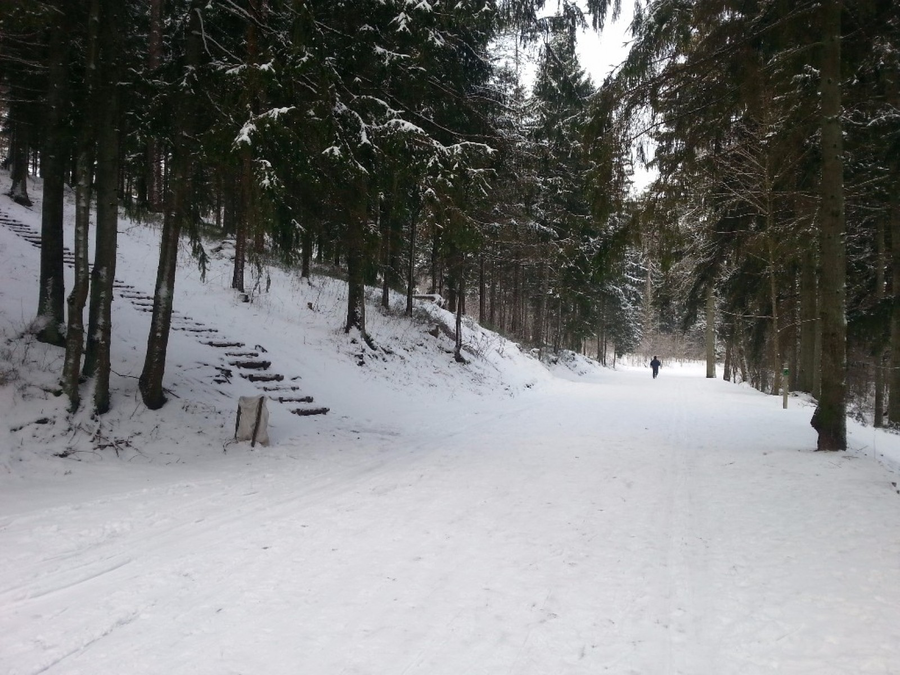

Ziemas izklaides ir ļoti jautras un aizraujošas, tās ir svarīgas, lai ziema tiktu pavadīta jautrā noskaņā, šeit būs dažas idejas, ko var darīt kopā ar draugiem vai ģimeni.
Slēpošana

Slēpošana ir sportiska aktivitāte un sporta veids, kurā slēpotājs ar slēpju palīdzību pārvietojas pa sniegu. Slēpošana tiek izmantota arī militāros nolūkos, kā arī, lai pārvietotos vietās, kur ir bieza sniega sega. Vairāk par vietām, kur var slēpot uzzini spiežot šeit